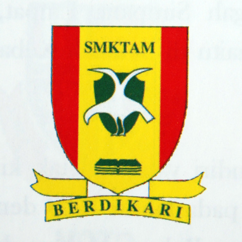
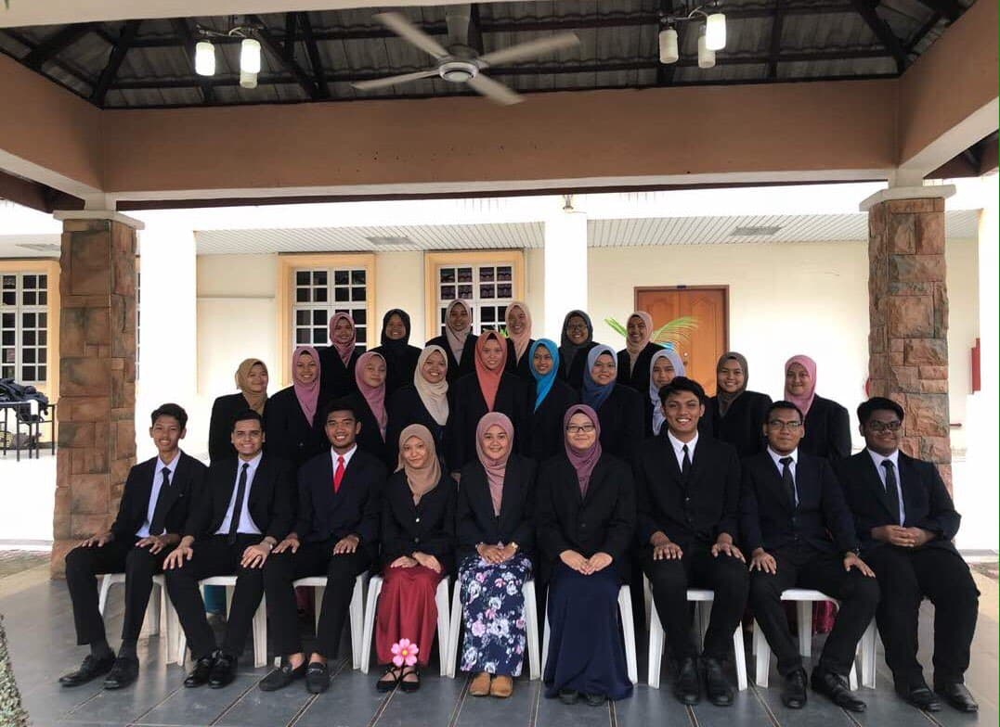

2007 |
|---|
| I have started my primary school on 2007 and ended on 2012 at SK Titi Gajah. There is a lot of memories are also created during my childhood years. |
|  2013 |
|---|
| I have started my secondary schools at SMK Tunku Abdul Malik, Alor Setar, Kedah. A lot of memories that have created during at that time. I have ended as a high school students life on 2017. How time flies so fast, all the memories still vivid on my mind. Missing my high schools friends and also my teachers. |
|  2018 |
|---|
| In this section, I have started as a university's students life at University Technology Mara (UiTM) which is UiTM Kedah located at Sungai Petani. I'm a student of course in Diploma in Information Mangement (IM110). Throughout this course, I have learned and obtain for so many experienced and information in every semester. I enjoyed this course so much throughout every lectures and make some new friends at UiTM Kedah. But now I'm currently a part 5 year students, how time flies by so fast which my diploma journey will be ended in 2021. I still cannot believe it. |